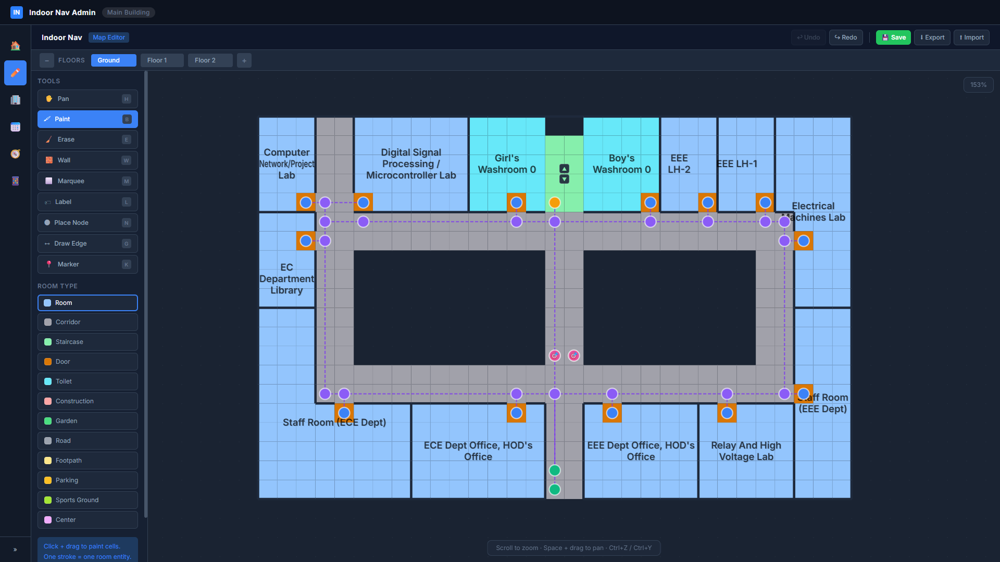
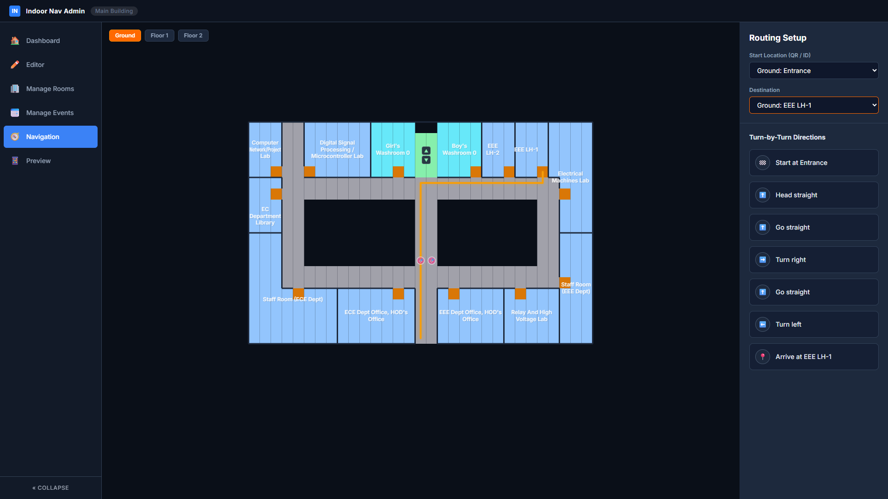
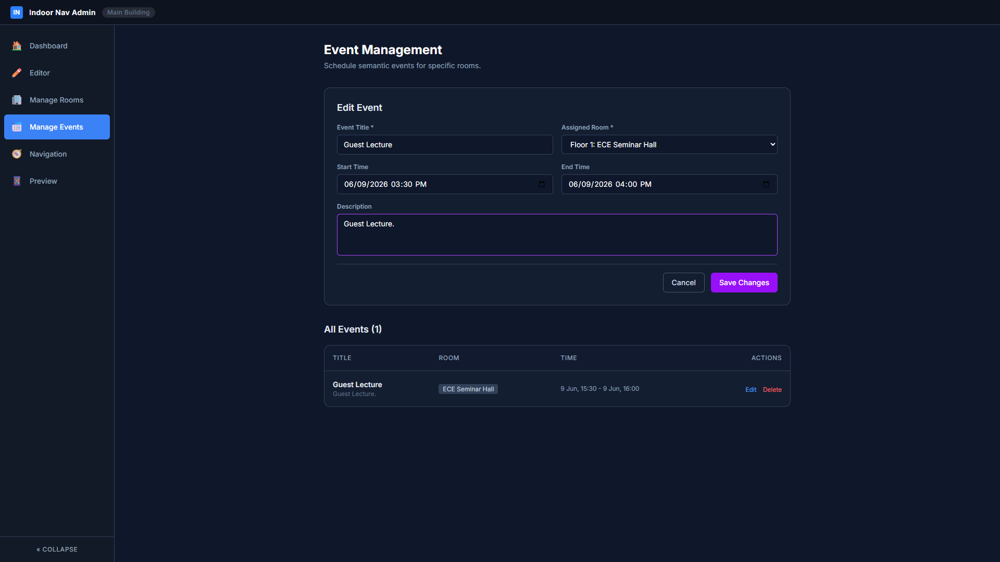
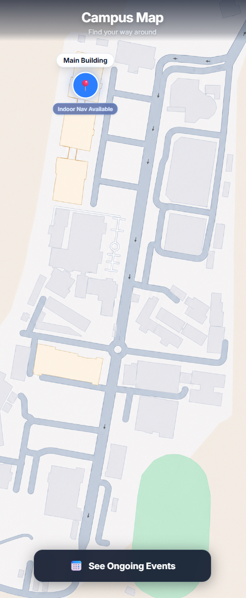
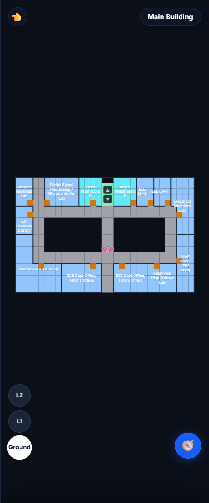
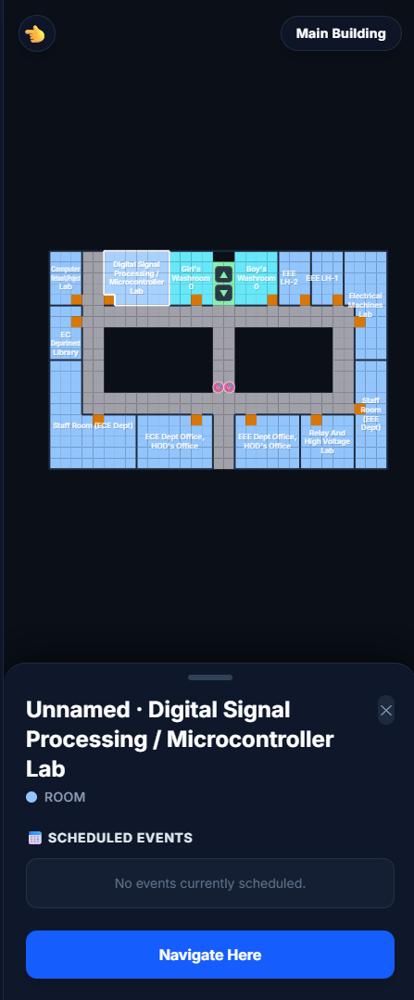
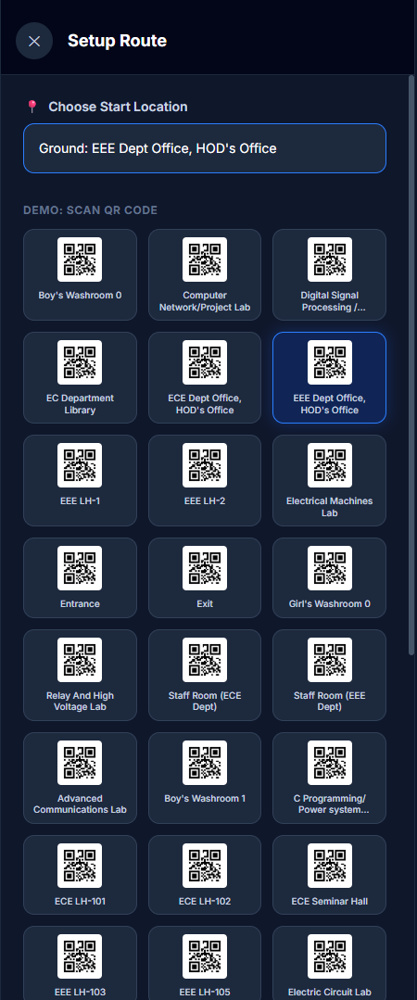
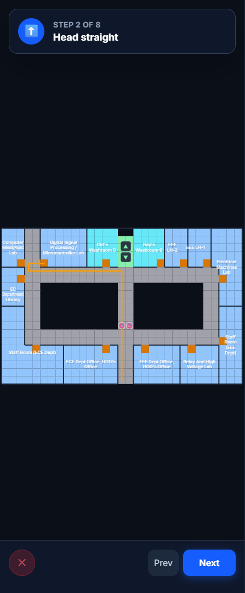

An Indoor Navigation System for College Campuses
Large campus buildings are confusing for new students, visitors, and staff
No existing system provides room-level indoor navigation
Events and activities inside buildings are hard to discover and locate
GPS doesn't work indoors. There's no Google Maps for buildings.
Indoor Nav is a full-stack web application that lets administrators map any building floor-by-floor, add rooms, events, and navigation nodes — and lets users navigate room-to-room with turn-by-turn directions, all from a mobile browser.

editor.png Map Editor — Floor 1 view with nodes and edges
navigation.png Navigation page — path highlighted with directions panel
events.png Event Management page
campus_map.pngCampus Map with building markers. Tap a building to enter.

floor_view.pngFloor map with labeled rooms. Tap any room to see details and events.

room_popup.pngRoom popup showing scheduled events and a Navigate Here button.

setup_route.png Setup Route screen showing QR tiles for each room
navigation_steps.png Step-by-step navigation viewDeployed at nav.pabit.in
Real-time indoor positioning using BLE beacons or Wi-Fi triangulation
Multi-building campus support with outdoor-to-indoor routing
Admin analytics — foot traffic heatmaps, popular routes
Indoor Nav demonstrates that meaningful, real-world navigation tools can be built from scratch — for any building, by anyone.